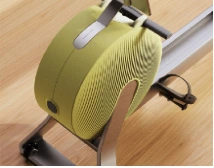
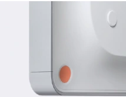
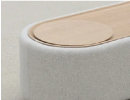
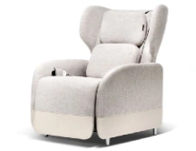
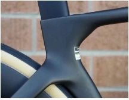
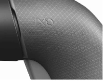

01星弧 ARC
家居陪伴
让运动轻松进入生活，让产品自然留在家中
家庭健康新家电设计提案 · 三种设计性格，一个共同目标。
让运动轻松进入生活，让产品自然留在家中
调节与转动，呈现机械之美
以克制线条与镜面收纳，融入有审美的日常
把前期研究转化为设计依据，再逐步形成星弧、曜影、凌序三种性格。
01 / 产品与市场
梳理产品与竞品，寻找设计机会。
02 / 人群与生活
理解生活方式，明确体验诉求。
03 / 多方向设计探索
在不同方向中推敲轮廓、收纳与握持，再走向三稿深化。
从产品布局、市场表现到竞品功能与风格，建立新产品的研究起点。
第一轮：从产品走向生活方式。再从人群差异，延展出不同的产品机会。
从人群偏好、家庭结构与生活节奏，寻找家庭运动的切入点。
将人群差异延展为都市生活、家庭共享与进阶训练等产品机会。
以极简、克制、现代为基础，引入柔和轮廓、亲肤触感与家居化材质。













让科技感融入日常，
以柔和的轮廓与触感，建立家居陪伴感。

01

Mirage 澄境
宽大纯平
02

Lynmate 灵伴
一机双用
03

Bamboo 竹韵
单手收纳
04

Zephyr 蝶悦
舒展轻盈
05

Origin 曜影
机械美感
06

Linear 凌序
格调设计
家庭健康新家电
让运动融入日常，也让产品回应自己的生活方式。
让运动轻松进入生活，让产品自然留在家中。
家居化轮廓
温润材质表达
日常陪伴感
从早期推演、方向凝练，到本轮整机形态。
探索弧线、握持与屏幕，推敲人与框架的关系。
从多轮形态与材质探索中，逐步凝练设计方向。
本轮设计模型，呈现当前整机形态。
进入星弧 ARC 3D 互动评审 ↗清楚呈现跑面、坡度与握持姿态。
调节与转动，呈现机械之美。
可调高度把手
圆形关节语言
灯光与材质的碰撞
延续圆形关节与机械秩序。
从灯带、折叠操作到脚垫与出线，呈现曜影的具体设计。
以克制线条与镜面收纳，融入有审美的日常。
精致感
克制的比例
精致的连接
从早期推演、方向凝练，到本轮整机形态。
运动结束，产品如何回到日常生活。
从脚下缓冲、屏幕视线，到提拿、抬升与竖放，逐项推敲整机体验。
点击各图可查看原图
进入凌序 3D 互动评审 ↗把个人偏好，带进每天最直接的触感。
星弧 · 家居陪伴 / 曜影 · 机械美感 / 凌序 · 极致美学与可选把手
希望共同判断：哪种方向最契合品牌？哪些体验最值得继续深化？
三款均可由厂商评估选用镜面底面。
在原有支撑之外，增加可收拢、可外展的脚座研究。
镜面底面与增稳机构可分别评估；把手材质选择仅属于凌序，沿用原有选项。
连续页码与网址一致：#p23 就是第23页 · 左右键翻页 · 点击图片放大 · Esc关闭